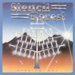

| Artist: | Stencil Forest |
| Title: | Opening Act |
| Label: | Riverworld Music |
| Length(s): | minutes |
| Year(s) of release: | 1983/2004 |
| Month of review: | [10/2005] |
| 1) | Opening Act | 5.46 |
| 2) | Celestial Voices | 4.16 |
| 3) | Just A Fantasy | 4.36 |
| 4) | Crossroads | 3.47 |
| 5) | Looking Back | 3.59 |
| 6) | The Pandemonium Shadow Show | 8.48 |
| 7) | Indian Summer | 4.16 |
| 8) | Five Studded Poker Player | 5.59 |
| 9) | Five By Five (bonus Track) | 3.30 |
| 10) | Just A Fantasy (acoustic Version) | 4.18 |
Celestial Voices opens with powerful chords and sizzling synths and some nicely bombastic organ. After that, a sharp guitar sound takes over (it really sounds very different from the previous song), and even here some mellotron. The vocal melody reminds me of the commercial side of Kayak and Eloy (but without the accent). The keyboards in the middle sound seventies though and remind more of ELP, while the guitar moves into guitar-hero-meander style. It is in these places that the vocalist can remind me of John Wetton while he sung in UK. The bouncy/plodding style of this song is a bit too frolic for my tastes, but the variety and instrumentation does make it closer to prog.
Just A Fantasy is a song that opens very nicely with flowing melodic material on acoustic guitar and fluting synths. This lone ballad is really well-sung, especially since the vocalist has to carry the song all by himself (well more or less). A friendly song, and I can imagine modern bands on the softer side of sympho playing this type of ballad (if they actually think of writing it). The piano in the middle part is quite melancholic and reminds of Clive Langer's Even Though. The best track so far, and would be surprised to hear them surpass it.
Crossroads continues the Styx vein with somebody taking the place of Dennis DeYoung. Again, the strongest part of the songs are the vocal melodies which easily stick in your head. Not that the music is desperately trying to be catchy, but I can very well imagine that this album is sought after in the AOR corner of the music world. It may sound a bit dated, but the instrumental palette is very varied, sometimes I hear shards of Genesis and ELP, satisfying also the prog audience. But the songs are songs, not long drawn out epics with complicated transitions and breaks.
Looking Back opens like a song from Genesis' Invisible Touch, but later the Styx feel comes more to the fore (putting us ten years back in the process). This is a much more catchy tune, especially in the chorus. Thus a bit too accessible for my tastes.
The Pandemonium Shadow Show is quite a long song, almost nine minutes in length. It starts in meander mode. The vocals are alternated on this song, with one singing the higher registers and one the lower. I am not so fond of the higher ones. For the rest we have the usual ingredients: piano, keyboards lining the music, but a rather bluesy guitar sound this time around. At the end, the music dies down, after which the vocals plus acoustic guitar come jangling back.
Indian Summer is the following relatively mellow tune. I hear some resemblances to the Alan Parsons Project here, also in the guitar sound. The chorus is a bit too sugary for my tastes. Five Studded Poker Player brings back the organ and a bit of a bombastic feel. I am not so happy with the vocal melody this time though. But the ending is really quite nice and melodic again.
What is left are two bonus cuts. The first of these Five By Five (bonus track), was recorded in the nineties. It is a bit of a reggae groove, and is comparable to John Wetton's solo material. It is a bit too catchy to really sound like Yes, but in the higher reasons the vocalist does also have a bit of the Jon Anderson timbre.
Just A Fantasy (acoustic version) is simply an acoustic version of this excellent song.